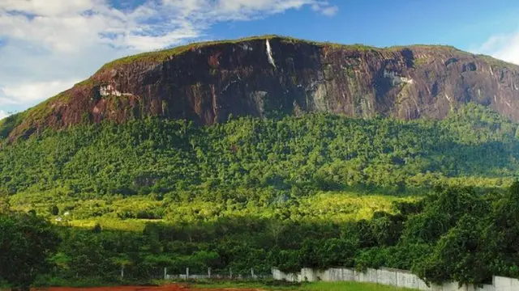

1. Air Terjun Nokan Nayan

Air Terjun Nokan Nayan (bahasa Uud Danum: Nohkan Lonanyan) adalah sebuah air terjun yang berada di pedalaman Pulau Kalimantan.
Air Terjun Nokan Nayan merupakan salah satu air terjun tertinggi dan terbesar di Indonesia dengan tinggi lebih dari 180 Meter. Nohkan
dalam Bahasa Ot Danum berarti air terjun dan Lonayan adalah nama sungai dimana Air Terjun Nokan Nayan terbentuk. Air Terjun
Nokan Nayan terdiri dari dua air terjun dengan dua sumber sungai berbeda namun jatuh dalam satu tempat diujung sebuah lembah,
yaitu Air Terjun Nokan Nayan dan Air Terjun Jongonoi. Air Terjun Jongonoi terbentuk tepat disisi Air Terjun Nokan Nayan dari aliran Sungai Jongonoi.
Kedua air terjun tersebut memiliki ketinggian yang hampir sama. Debit air kedua air terjun yangberada di ketinngian 200 Mdpl ini sangat besar
terlebih saat musim penghujan sehingga bisa memunculkan kabut yang membumbung tinggi dan membentuk pelangi abadi dibawahnya saat siang terik.
2. Bukit Kelam

Gunung Kelam adalah gunung yang terletak di Kalimantan Barat. Gunung Kelam membentang dari barat ke timur dengan ketinggian 1.002 mdpl
merupakan sebongkah batu raksasa (monolit). Tempat ini terletak 20 km dari kota Sintang dan sekitar 395 km dari Pontianak ibu kota Kalimantan Barat.
Gunung ini merupakan tempat hidupnya tanaman endemik kantong semar dari spesies Nepenthes clipeata. Tampak sekilas Gunung Kelam mirip dengan Ayers Rock
di Australia dikarenakan sama-sama dikategorikan sebagai batu monolit. Bukit kelam jauh lebih tinggi dan besar dibandingkan dari pada Ayers Rock.
Bukit Kelam sendiri memiliki tinggi 1.002 mdpl dibandingkan dengan Ayers Rock yang memiliki tinggi 862 mdpl. Kawasan Gunung Kelam berada di wilayah
Kecamatan Kelam Permai, kab. Sintang Kalimantan Barat. Tepatnya di Hutan wisata Bukit Kelam. Bukit Kelam berada di antara dua sungai besar yaitu Sungai Melawi
dan Sungai Kapuas. Gunung ini berjarak sekitar 23 km dari pusat kabupaten Sintang ini bisa ditempuh sekitar 20-40 menit hingga ke kaki gunung.
Akses jalan menuju kaki bukit ini terbilang sangat baik dengan dilapisi aspal. Namun, jalanan yang naik turun seperti melewati bukit membuat pengendara harus berhati-hati.
Untuk pendakian mencapai puncak dibutuhkan waktu 4-5 jam untuk naik dan 3-4 jam untuk turun. Keanekaragaman Hayati
Gunung Kelam merupakan salah satu habitat yang dikenal paling penting di dunia untuk tanaman kantong semar, tampaknya
menjadi rumah bagi 14 spesies yang berbeda, salah satunya yang endemik adalah Nepenthes Clipeata yang sampai saat ini dianggap
menjadi yang paling terancam punah dari semua jenis kantong semar. Pada tahun 1894, ahli botani Jerman Johannes Gottfried Hallier menjadi orang Eropa kedua yang
mendaki Gunung Kelam setelah Dr Gürtler.Tanaman kantong semar tumbuh di sisi tebing granit vertikal pada ketinggian antara 500 dan 800 meter. Sebagian besar
tanaman kantong semar tumbuh di sudut-sudut jelas dari gunung yang sulit dijangkaut. Selain kantong semar di Gunung Kelam juga terdapat Anggrek hitam.
Fauna disini dilaporkan masih terdapat beruang madu, trenggiling. Burung walet juga terdapat pada gua-gua di kawasan gunung Kelam.
Potensi Bukit Kelam ini sangat berpotensi untuk dikembangkan sebagai objek wisata alam dan juga untuk lokasi terbang layang dan panjat tebing
karena terletak pada ketinggian 50 – 900 meter dari permukaan laut. Saat ini kawasan Bukit Kelam sudah direnovasi dan kawasan ini telah dijadikan
sebagai Pusat Perkemahan Pramuka. Untuk mencapai puncak Bukit Kelam saat kita bisa menggunakan sebuah tangga dengan ketinggian ± 90 meter yang
terletak di sebelah barat. Bukit Kelam juga merupakan sumber air bersih bagi masyarakat terutama masyarakat kabupaten Sintang dan juga taman wisata alam (TWA)
bukit kelam juga berdekatan dengan cagar budaya Rumah Betang yang berada di desa Ensaid Panjang.
3. Tugu khatulistiwa

Tugu Khatulistiwa di bangun oleh Pemerintah Belanda pada tahun 1928.
"Tugu didalam bangunan merupakan tugu yang pertama dibangun, terbuat dari kayu ulin (kayu besi). Disini juga ada garis-garis yang menandakan
daerah lintang utara dan lintang selatan. Jadi pengunjung cukup melangkahkan satu kaki, berarti telah melewati daerah lintang tersebut,
"Peristiwa penting dan menakjubkan di sekitar Tugu Khatulistiwa adalah saat terjadinya titik kulminasi matahari, yakni fenomena alam
ketika matahari tepat berada di garis khatulistiwa. Pada saat itu posisi matahari akan tepat berada di atas kepala sehingga menghilangkan
semua bayangan benda-benda dipermukaan bumi. Pada peristiwa kulminasi tersebut, bayangan tugu akan 'menghilang' beberapa detik saat diterpa
sinar matahari. Demikian juga dengan bayangan benda-benda lain di sekitar tugu.Peristiwa titik kulminasi Matahari itu terjadi setahun dua kali,
yakni antara tanggal 21-23 Maret dan 21-23 September. Peristiwa alam ini menjadi event tahunan kota Pontianak yang menarik kedatangan wisatawan.
4. Festival Cap Go Meh Singkawang

Festival Imlek dan Cap Go Meh di Kota Singkawang telah berlangsung sejak lama dan menjadi perayaan Imlek tertua dan terbesar di Indonesia.
Kegiatan ini pertama kali dilaksanakan secara resmi dengan panitia dari unsur Pemerintah Kota Singkawang pada tahun 2008.
Tahun ini, Festival Imlek dan Cap Go Meh di Kota Singkawang berhasil menduduki salah satu event terbaik Top 10 pada Karisma Event Nusantara (KEN)
2023 yang ditetapkan oleh Kemenparekraf / Baparekraf RI. Kegiatan ini dilatarbelakangi oleh kekayaan alam dan budaya di Kota Singkawang
(secara bahasa berasal dari bahasa Hakka, yaitu san khew jong: gunung, muara, laut) yang dikenal sebagai kota wisata dan multietnis dengan toleransi
tinggi di Provinsi Kalimantan Barat di mana mayoritas penduduknya bersuku bangsa Tionghoa dengan budaya yang sangat kental. Tahun baru Imlek merupakan
perayaan terpenting bagi suku bangsa Tionghoa yang dimulai pada hari pertama bulan pertama dalam penanggalan Tionghoa dan berakhir dengan Cap Go Meh pada
hari kelima belas. Rangkaian Festival Imlek dan Cap Go Meh di Kota Singkawang diselenggarakan di Stadion Kridasana dan Jalan Diponegoro yang diikuti
oleh seluruh kecamatan di Kota Singkawang serta disiarkan langsung melalui media sosial Dinas Komunikasi dan Informasi Kota Singkawang.